Lenses
Eine Lens annotiert die Wörter in der Leseansicht nach ihrer Kategorie. Solche Kategorien sind zum Beispiel Wortarten oder Codes. Die Lens Wortklasse etwa unterstreicht alle Substantive blau und alle Verben rot, während die Lens Codes Ihre Kodierungen in der Farbe des jeweiligen Codes darstellt.
Lenses helfen Ihnen, beim Lesen Muster in Texten zu erkennen. Wenn Sie zum Beispiel im Meinungsbeitrag „Uns läuft die Zeit davon“ die Lens Verneinung aktivieren, fällt Ihnen jedes nicht, nie und niemand sofort ins Auge, zusammen mit dem, was es im Satz verneint. Ebenso kann ein Wörterbuch mit Heckenausdrücken, als Lens aktiviert, zeigen, wo ein Text eine Behauptung abschwächt. Meist werden Sie mit Lenses die Textstellen suchen, die für Ihre Fragestellung relevant sind, und diese dann genau lesen, bevor Sie kodieren und zählen. Alle Beispiele in diesem Kapitel stammen aus „Klimadebatte“, dem Beispielprojekt dieses Handbuchs, das Sie mit Ablage ▸ Importieren ▸ Beispielprojekt Ihrer Bibliothek hinzufügen (siehe Das Beispielprojekt in Kapitel 1, Einführung).
Lenses im Überblick
Jede Kategorie, die eine Lens annotiert, ist ein Aspekt der Lens, zum Beispiel Substantiv in Wortklasse oder Verpflichtung in Modalität. Nur wenige Aspekte teilen sich eine Farbe; alle anderen Aspekte haben jeweils eine eigene Farbe. Über dem Text zeigen die meisten Lenses eine Legende aus farbigen Lenslets, die für die Aspekte stehen. An der Legende lesen Sie ab, was jede Farbe bedeutet, und mit ihr aktivieren oder deaktivieren Sie einzelne Aspekte der Lens. Mehr dazu finden Sie unter Eine Lens lesen weiter unten in diesem Kapitel.
LemmaLoom bietet fünf Arten von Lenses:
- Eingebaute Lenses von Wortklasse bis Rhetorik stellen die Grammatikanalyse dar, die beim Indizieren für das Dokument erstellt wurde (siehe Kapitel 21, Analyse und Indizierung).
- Die Lenses Codes und Lesezeichen stellen Ihre Annotationen im Dokument dar.
- Wörterbücher haben eigene Lenses, die Wörterbuch-Lenses, die ihre Begriffe annotieren. Jede Kategorie hat ihre eigene Farbe (siehe Kapitel 19, Wörterbücher).
- Abfrage-Lenses stellen die Treffer einer gesicherten Abfrage dar (siehe Kapitel 18, Abfrageergebnisse nutzen).
- Analysator-Lenses zeigen, was einer Ihrer eigenen Analysatoren gefunden hat (siehe Kapitel 20, Eigene Analysatoren).
Die eingebauten Lenses helfen Ihnen, die Wortwahl und den grammatischen Aufbau von Texten zu verstehen, und lassen sich auf jedes indizierte Dokument in LemmaLoom anwenden.
Um ein Dokument ohne Lens anzuzeigen, wählen Sie im Lens-Menü Alle deaktivieren.
Jedes geöffnete Dokument hat seine eigenen Lenses. Wenn Sie zum Beispiel zwei Dokumente nebeneinander lesen (siehe Zwei Dokumente nebeneinander lesen in Kapitel 5, Lesen und Bearbeiten), können Sie „Uns läuft die Zeit davon“ mit Modalität und gleichzeitig die Kolumne „Die Modelle liegen daneben“ mit Kohäsion betrachten. In einem Dokument, das Sie zum ersten Mal öffnen, sind die Lenses Codes und Lesezeichen aktiviert. Für jedes Dokument, das geöffnet bleibt, merkt sich LemmaLoom die aktivierten Lenses und die deaktivierten Aspekte und stellt sie wieder her, wenn Sie das Projekt erneut öffnen. Das Aktivieren oder Deaktivieren einer Lens oder eines Aspekts und das Einklappen eines Dokuments wirken sofort; um eine solche Aktion zurückzunehmen, führen Sie die umgekehrte Aktion aus (siehe Änderungen außerhalb des Projekts in Kapitel 23, Widerrufen und Wiederholen).
Das Lens-Menü ist deaktiviert, bis die Indizierung abgeschlossen ist. Bei Dokumenten in anderen Sprachen als Englisch, Deutsch und Chinesisch bleibt es ebenfalls deaktiviert, Kodierungen und Lesezeichen werden darin aber trotzdem angezeigt. Auch nach einem Import ohne Indizierung bleibt das Menü deaktiviert, bis die Indizierung abgeschlossen ist (siehe Ohne Indizierung importieren in Kapitel 21, Analyse und Indizierung).
Das Lens-Menü
Das Lens-Menü ist das erste der Werkzeuge am rechten Ende der Titelleiste, vor der Lupe und dem Menü Schrift, Randspalte und Textgröße (siehe Die Titelleiste in Kapitel 5, Lesen und Bearbeiten). An der Beschriftung des Menüs sehen Sie, ob Lenses aktiviert sind, wie viele und welche:
- Lens, wenn keine aktiviert ist;
- der Name der Lens, etwa Modalität oder Heckenausdrücke, wenn eine aktiviert ist;
- die Zahl der Lenses, etwa 2 Lenses, wenn mehrere aktiviert sind.
Wenn Sie den Mauszeiger auf das Menü halten, sehen Sie die Namen der aktivierten Lenses. Solange die Indizierung noch läuft, lautet der Tooltip Lenses stehen zur Verfügung, sobald die Indizierung abgeschlossen ist. Während Sie den Text eines Dokuments bearbeiten, sind das Lens-Menü und die Legenden ausgeblendet.
In der Abbildung unten sind in „Uns läuft die Zeit davon“ drei Lenses gleichzeitig aktiviert (Modalität, Lesezeichen und Codes), deshalb steht im Menü 3 Lenses. Kodierungen mit „Kipppunkte“, „Unsicherheit“ und „Angst“ erscheinen in der Randspalte und im Text selbst. Nach Lesezeichen und Codes folgen im Menü zwei weitere Lenses, die zu „Klimadebatte“ gehören („Heckenausdrücke“, das Wörterbuch des Projekts, und „Dringlichkeit im Gespräch“, eine Abfrage-Lens).
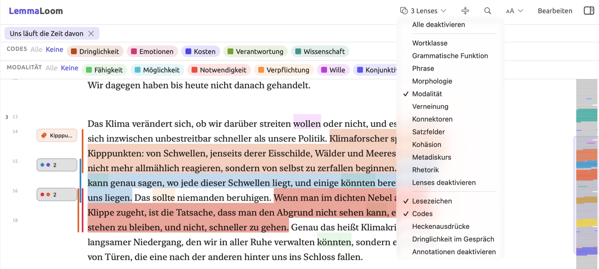
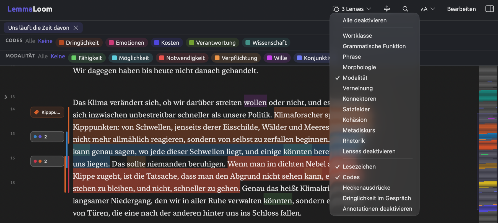
Das Menü hat höchstens drei Gruppen, die durch Linien getrennt sind:
| Gruppe | Inhalt |
|---|---|
| Eingebaute Lenses | Die eingebauten Lenses, die es für die Sprache des Dokuments gibt, in der Reihenfolge der Tabelle unter Eingebaute Lenses weiter unten in diesem Kapitel, danach Lenses deaktivieren |
| Analysatoren | Ihre eigenen Analysatoren für die Sprache des Dokuments, danach Analysatoren deaktivieren. Die Gruppe erscheint nur, wenn es mindestens einen solchen Analysator gibt. |
| Annotationen | Lesezeichen und Codes, dann die Wörterbücher des Projekts in alphabetischer Reihenfolge, dann etwaige Abfrage-Lenses, dann die Einträge Automatisch kodieren… und zuletzt Annotationen deaktivieren |
Der Eintrag Alle deaktivieren steht über den Gruppen.
So aktivieren oder deaktivieren Sie eine Lens:
- Öffnen Sie das Dokument in der Leseansicht.
- Klicken Sie in der Titelleiste auf das Lens-Menü.
- Wählen Sie eine Lens. Im Menü erscheint daneben ein Häkchen, und bei den meisten Lenses erscheint über dem Text eine Legende.
- Um eine weitere Lens hinzuzufügen, öffnen Sie das Menü erneut und wählen sie aus. Das Menü schließt sich nach jeder Auswahl.
- Um eine Lens zu deaktivieren, wählen Sie sie noch einmal.
Vier Einträge deaktivieren mehrere Lenses auf einmal:
| Eintrag | Was er deaktiviert |
|---|---|
| Alle deaktivieren | Jede Lens, auch Codes und Lesezeichen |
| Lenses deaktivieren | Die eingebauten Lenses der ersten Gruppe und alle Abfrage-Lenses |
| Analysatoren deaktivieren | Jede Analysator-Lens |
| Annotationen deaktivieren | Codes, Lesezeichen, Wörterbuch-Lenses und Abfrage-Lenses |
Ist ein Eintrag deaktiviert, ist keine der Lenses aktiviert, die er deaktivieren würde. Wenn Sie die eingebauten Lenses deaktivieren und dabei mit Ihren Kodierungen weiterlesen möchten, klicken Sie auf Lenses deaktivieren.
Der Eintrag Automatisch kodieren… kodiert die Textstellen, die eine Wörterbuch-, Abfrage- oder Analysator-Lens annotiert (siehe Automatisch kodieren mit einer Lens in Kapitel 7, Kodieren). Er ist nur zu sehen, wenn mindestens eine solche Lens aktiviert ist. Sind mehrere solche Lenses aktiviert, erscheint der Eintrag einmal für jede von ihnen, zum Beispiel Mit Heckenausdrücke automatisch kodieren….
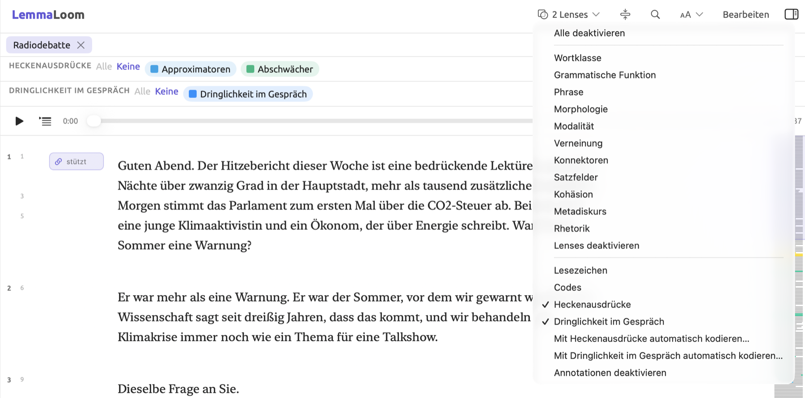
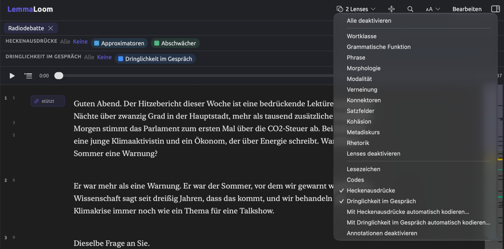
Im Vollbildmodus ist die Titelleiste ausgeblendet, und das Lens-Menü wandert in die Symbolleiste ganz oben auf dem Bildschirm. Dort hat es dieselben Einträge. Die Schaltfläche zum Einklappen, die weiter unten in diesem Kapitel beschrieben wird, heißt dort Auf Treffer reduzieren, und solange das aktuelle Dokument eingeklappt ist, steht dort Dokument ausklappen. Solange die Indizierung nicht abgeschlossen ist, zeigt das deaktivierte Menü den Tooltip Noch nicht indiziert (siehe Die Leseansicht im Vollbildmodus in Kapitel 5, Lesen und Bearbeiten).
Wenn Sie zwei Dokumente nebeneinander lesen, wirken die Werkzeuge der Titelleiste auf den aktiven Dokumentbereich. Um den aktiven Bereich zu wechseln, klicken Sie in den anderen Dokumentbereich.
Eine Lens lesen
Bei den meisten Lenses erscheint über dem Text eine Legende, sobald Sie die Lens aktivieren. Die Legende zeigt den Namen der Lens in Großbuchstaben und danach ihre Aspekte als farbige Lenslets in der Farbe des jeweiligen Aspekts. Ein Klick auf ein Lenslet deaktiviert den Aspekt, ein weiterer Klick aktiviert ihn wieder; seine Annotationen im Dokument verschwinden dabei und erscheinen wieder. Ein deaktiviertes Lenslet ist blass. Die Legenden stehen in der Reihenfolge, in der Sie die Lenses aktiviert haben.
Die meisten Lenslets zeigen ein kleines Quadrat in der Farbe des Aspekts. Lenslets für Aspekte, die eine Lens standardmäßig unterstreicht, etwa Neues am Ende (Betonung) in Kohäsion, zeigen stattdessen einen kurzen farbigen Balken.
Auswählen, welche Aspekte aktiviert sind
Wenn Sie eine Lens aktivieren, sind alle ihre Aspekte aktiviert. Meist grenzen Sie eine Lens auf wenige Farben ein, wenn Sie wissen, dass Ihre Fragen nur einen oder zwei Aspekte betreffen. Vielleicht möchten Sie nur die Verben untersuchen oder nur die Stellen, an denen ein Text eine Verpflichtung ausdrückt.
- Keine deaktiviert alle Aspekte, Alle aktiviert alle Aspekte. Alle ist deaktiviert, solange alle Aspekte aktiviert sind, und Keine, solange keiner aktiviert ist.
- Klicken Sie mit der rechten Maustaste auf ein Lenslet, um ein Kontextmenü zu öffnen. Nur dies aktivieren aktiviert nur diesen Aspekt. Deaktivieren oder Aktivieren schaltet den Aspekt um, und Alle aktivieren aktiviert wieder alle Aspekte.
Wörter deaktivierter Aspekte erscheinen blass. Annotationen anderer Lenses haben Vorrang vor diesem Verblassen.
Die Abbildung unten zeigt die Legende von Modalität in „Uns läuft die Zeit davon“ mit dem geöffneten Kontextmenü des Lenslets Verpflichtung. Wenn Sie Nur dies aktivieren wählen, sehen Sie nur noch die Wörter, die eine Verpflichtung ausdrücken, etwa sollte in „Das sollte niemanden beruhigen.“


So behalten Sie nur einen bestimmten Aspekt einer Lens:
- Aktivieren Sie die Lens.
- Klicken Sie in der Legende mit der rechten Maustaste auf das Lenslet des Aspekts und wählen Sie Nur dies aktivieren.
- Um wieder jeden Aspekt zu aktivieren, klicken Sie auf Alle.
Wenn Sie ein Dokument auf annotierte Sätze einklappen, bleiben nur die Sätze übrig, die Annotationen eines aktivierten Aspekts enthalten (mehr dazu unter Nur annotierte Sätze anzeigen weiter unten in diesem Kapitel). Der Dialog Automatisch kodieren enthält nur Zeilen für die aktivierten Aspekte; deaktivierte Aspekte werden beim automatischen Kodieren also übersprungen.
Drei Lenses können Sie auch im Tab Grammatik des Inspektors aktivieren. Öffnen Sie in dessen Facette Diskurs eine Kategorie unter Kohäsion, Metadiskurs oder Rhetorik und klicken Sie auf Im Text hervorheben. LemmaLoom aktiviert die Lens, falls nötig, und filtert sie so, dass sie nur die gewählte Kategorie zeigt. Ein weiterer Klick auf den Link aktiviert wieder alle Aspekte (siehe Eine Kategorie hervorheben in Kapitel 11, Der Grammatik-Inspektor).
Lenses kombinieren
Annotieren zwei Lenses dasselbe Wort im selben Stil, sind beide Farben zusammen zu sehen. Hervorhebungen werden zu einem Farbverlauf, der oben in der Farbe der ersten Lens beginnt und unten in der Farbe der zweiten endet. Unterstreichungen gehen ebenso ineinander über, links in der ersten Farbe und rechts in der zweiten. Auch Textfarben verlaufen; jeder Buchstabe geht von der ersten Farbe oben in die zweite Farbe unten über.
Am besten lesbar sind Kombinationen, bei denen eine Lens hervorhebt und die andere unterstreicht. Standardmäßig unterstreichen Wortklasse und Grammatische Funktion, während die meisten anderen Lenses Wörter hervorheben. Kombinieren Sie Modalität deshalb mit Wortklasse und nicht mit Phrase, denn Phrase hebt die meisten Wörter im Dokument hervor und verdeckt so die Hervorhebungen anderer Lenses. Bei vier Lenses können Sie außerdem in den Einstellungen den Annotationsstil ändern, um Platz für eine dritte Lens zu schaffen (siehe Farben und Stile der Lenses weiter unten in diesem Kapitel).
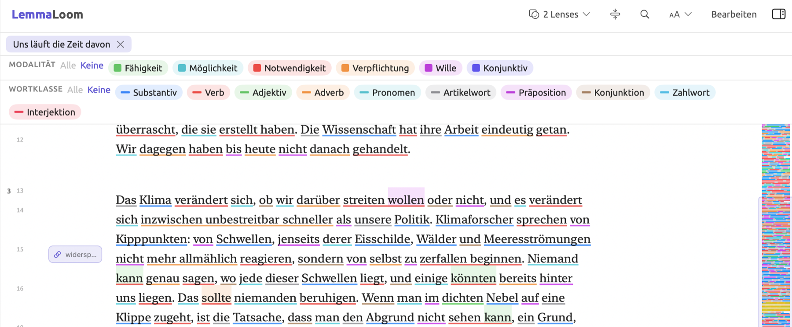
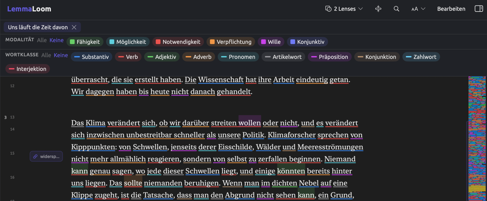
Die Dokumentübersicht, der schmale senkrechte Streifen am rechten Rand der Leseansicht, zeigt die Farben der aktivierten Lenses. Das hilft vor allem bei sehr langen Dokumenten, denn in der Dokumentübersicht finden Sie Häufungen von Annotationen schnell und springen per Klick an die jeweilige Stelle im Dokument (siehe Die Dokumentübersicht in Kapitel 5, Lesen und Bearbeiten).
Nur annotierte Sätze anzeigen
Lenses können ein Dokument auch auf die Sätze einklappen, die sie annotieren. So lesen Sie zum Beispiel alle Sätze, die von Erfordernissen sprechen, oder alle kodierten Textstellen hintereinander. Das Einklappen hilft besonders bei langen Dokumenten oder wenn Sie mehrere ähnliche Sätze vergleichen möchten, bevor Sie sie kodieren.
Sie klappen ein Dokument mit der Schaltfläche zum Einklappen ein. Die Schaltfläche liegt direkt rechts neben dem Lens-Menü und zeigt nur ein Symbol (ein Rechteck zwischen zwei Pfeilen), das eingefärbt ist, solange das Dokument eingeklappt ist. Die Schaltfläche erscheint, sobald eine eingebaute Lens oder eine Wörterbuch-, Abfrage- oder Analysator-Lens aktiviert ist oder wenn Codes oder Lesezeichen aktiviert ist und das Dokument Kodierungen oder Lesezeichen enthält.
Solange das Dokument eingeklappt ist, bleiben die Sätze sichtbar, die eine der aktivierten Lenses annotiert. Bei einer eingebauten Lens oder einer Wörterbuch-, Abfrage- oder Analysator-Lens bleibt ein Satz also stehen, wenn mindestens ein Wort darin einen der aktivierten Aspekte trägt; bei Codes und Lesezeichen bleibt ein Satz stehen, wenn sich eine Kodierung beziehungsweise ein Lesezeichen mit ihm überschneidet.
Liegen zwischen zwei verbliebenen Sätzen ausgelassene Sätze, zeigt eine Zeile aus drei gesperrten Punkten die Auslassung an. Sätze vor dem ersten und nach dem letzten verbliebenen Satz fallen ohne Punkte weg.
Im Beispiel unten ist in „Uns läuft die Zeit davon“ nur die Lens Modalität aktiviert, und alle Aspekte außer Notwendigkeit sind deaktiviert. Nach dem Einklappen bleiben nur die Sätze übrig, die eine Notwendigkeit ausdrücken. Einer davon, Ich möchte keins von beidem je sagen müssen, fordert jedoch nichts, sondern weist zwei Ausreden zurück.
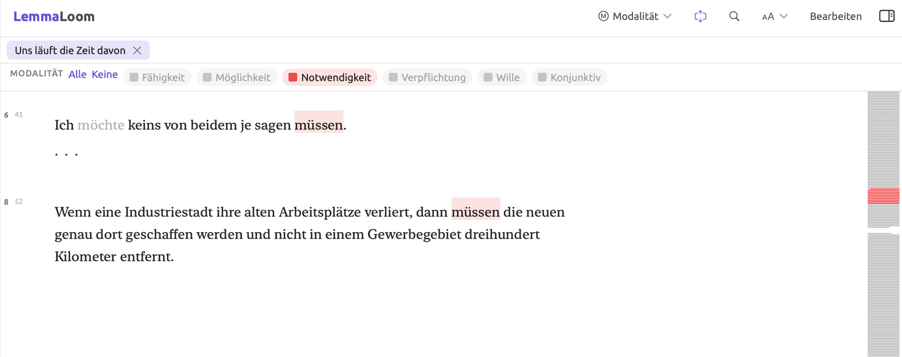
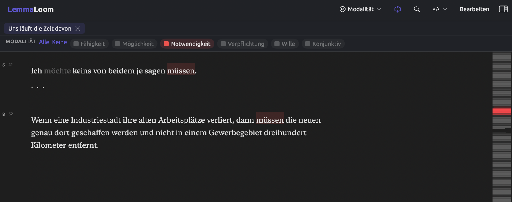
So zeigen Sie mit einer Lens nur die annotierten Sätze an:
- Aktivieren Sie die Lens und deaktivieren Sie in ihrer Legende die Aspekte, die Sie nicht brauchen.
- Wenn kodierte Sätze und Sätze mit Lesezeichen nicht zusätzlich stehen bleiben sollen, deaktivieren Sie Codes und Lesezeichen. Annotationen deaktivieren deaktiviert beide und lässt die eingebauten Lenses aktiviert, deaktiviert aber auch Wörterbuch- und Abfrage-Lenses.
- Klicken Sie auf die Schaltfläche zum Einklappen.
- Um wieder das ganze Dokument zu lesen, klicken Sie noch einmal auf die Schaltfläche. Ihr Tooltip lautet jetzt Wieder das gesamte Dokument anzeigen.
Solange ein Dokument eingeklappt ist, wirkt sich jede Änderung an Lenses und Aspekten sofort aus. Bleibt kein Satz übrig, erscheint wieder das ganze Dokument. Dasselbe geschieht, wenn Sie mit dem Bearbeiten beginnen oder Suchen (⌘F) öffnen.
Kodierungen, Lesezeichen und Memos, die Sie im eingeklappten Dokument hinzufügen, bleiben an ihrer Stelle im vollständigen Text erhalten.
Eingebaute Lenses
Die eingebauten Lenses zeigen die Grammatikanalyse des Dokuments, also seine Wörter, deren Wortklasse und Morphologie, die Beziehungen zwischen den Wörtern und die Phrasen, die sie bilden. Fehler der Grammatikanalyse erscheinen auch in den Lenses. Bei redigierten Texten ist die Analyse meist genau, bei gesprochener Sprache mit ihren Wiederholungen, Unterbrechungen und unvollständigen Sätzen weniger. Am besten finden Sie deshalb zuerst mit der Lens infrage kommende Textstellen und prüfen eine Stichprobe davon, bevor Sie etwas über ihre Häufigkeit aussagen.
Einige Lenses, darunter Modalität, Konnektoren und Metadiskurs, arbeiten mit kurzen Wortlisten statt mit der Grammatik. Sie annotieren ein gelistetes Wort überall, wo es in der passenden Wortklasse vorkommt, gleich was es im Zusammenhang bedeutet.
Welche eingebauten Lenses LemmaLoom anbietet, hängt von der Sprache des analysierten Dokuments ab:
| Lens | Englisch | Deutsch | Chinesisch |
|---|---|---|---|
| Wortklasse | Ja | Ja | Ja |
| Grammatische Funktion | Ja | Ja | Ja |
| Phrase | Ja | Ja | Ja |
| Morphologie | Ja | Ja | Nein |
| Modalität | Ja | Ja | Ja |
| Verneinung | Ja | Ja | Ja |
| Konnektoren | Ja | Ja | Ja |
| Satzfelder | Nein | Ja | Nein |
| Konstruktionen | Nein | Nein | Ja |
| Partikeln | Nein | Nein | Ja |
| Kohäsion | Ja | Ja | Ja |
| Metadiskurs | Ja | Ja | Ja |
| Rhetorik | Ja | Ja | Ja |
Kohäsion, Metadiskurs und Rhetorik beruhen auf Analysen, die Analysatoren beim Indizieren ausführen. Welche Analysatoren auf Ihr Dokument angewendet wurden, sehen Sie in den Dokumenteigenschaften unter Indizierung (klicken Sie in der Seitenleiste mit der rechten Maustaste auf das Dokument und wählen Sie Eigenschaften). Entfernen Sie dort die Ausgabe eines dieser Analysatoren, verschwindet die zugehörige Lens aus dem Lens-Menü des Dokuments; ein Klick auf Ausführen bringt sie zurück (siehe Die Ausgabe eines Analysators entfernen in Kapitel 21, Analyse und Indizierung).
Wortklasse
Wortklasse unterstreicht jedes Wort im Dokument nach seiner Wortart. Die Legende besteht aus zehn Aspekt-Lenslets, nämlich Substantiv, Verb, Adjektiv, Adverb, Pronomen, Artikelwort, Präposition, Konjunktion, Zahlwort und Interjektion. Die Lens gibt Ihnen einen schnellen Eindruck vom Aufbau Ihrer Texte, weil Sie sehen, wie stark ein Text bestimmte Wortklassen gewichtet; amtliche Berichte etwa stützen sich oft stark auf Substantive. Wenn Sie nur den Aspekt Adjektiv aktiviert lassen, sehen Sie, mit welchen Adjektiven Schreibende urteilen.
Im englischen Satz The fuel tax rarely spares a rural family unterstreicht Wortklasse die Wörter fuel, tax und family als Substantive, spares als Verb, rarely als Adverb, rural als Adjektiv und The und a als Artikelwörter.
Die Abbildung unten zeigt den Anfang von „Uns läuft die Zeit davon“, der Geschichte einer heißen Nacht, mit aktivierter Lens Wortklasse.
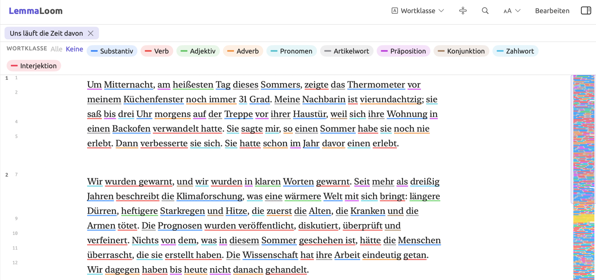
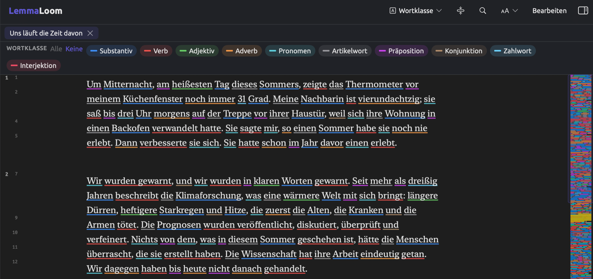
Die Klassen sind weit gefasst, und einige enthalten Wörter, die man auf den ersten Blick nicht in ihnen vermuten würde:
- Verb umfasst auch Hilfs- und Modalverben wie haben, sein, können und sollen.
- Im Englischen umfasst Pronomen auch Possessivpronomen wie my und their sowie there in there is. Deutsche Possessivpronomen wie mein und ihr fallen dagegen unter Artikelwort.
- Partikeln gehören alle zur Klasse Präposition, etwa im Englischen to in to work, up in pick up und das Possessiv-’s, im Deutschen zu und nicht und im Chinesischen 的 und 了.
- Im Englischen umfasst Präposition auch unterordnende Konjunktionen wie because, if und that (I think that). Die englische Analyse kennzeichnet sie wie Präpositionen; im Deutschen und Chinesischen zählen sie zur Konjunktion.
Wörter, die in keine der zehn Klassen passen, etwa fremdsprachige Wörter, bekommen eine graue Unterstreichung.
Grammatische Funktion
Grammatische Funktion unterstreicht jedes Wort nach seiner Rolle im Satzbau. Die Lens zeigt, wer oder was in einem Text handelt, etwa ob das Klima Subjekt eines Verbs ist, wie in das Klima verändert sich, oder sein Objekt, wie in das Klima schützen.
Jedes Wort außer dem Hauptverb ist im Satzbau mit genau einem anderen Wort verbunden, seinem Kopf. In a rural family zum Beispiel ist rural mit family verbunden. Jedes Wort wird nach seiner eigenen Beziehung zu seinem Kopf gefärbt. In einer Phrase zeigt deshalb das Kernwort die Aufgabe der Phrase, und die Wörter, die es näher bestimmen, erscheinen als Adjektivisch oder Adverbial.
In The fuel tax rarely spares a rural family gilt:
- tax wird als Subjekt annotiert, The und fuel als Adjektivisch;
- rarely wird als Adverbial gefärbt;
- family wird als Objekt annotiert, a und rural als Adjektivisch;
- das Hauptverb spares schließlich bleibt ungefärbt.
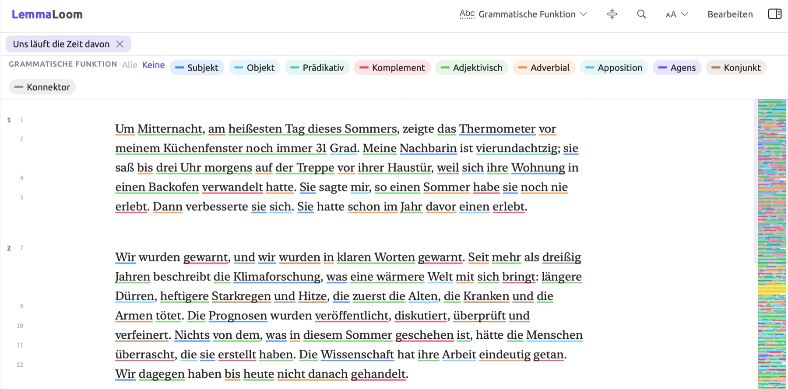
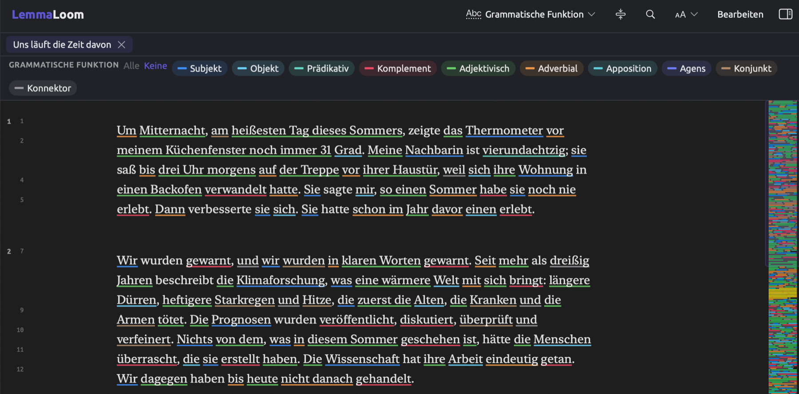
Die Legende hat zehn Aspekt-Lenslets:
| Aspekt | Was er annotiert | Beispiel |
|---|---|---|
| Subjekt | Das Subjekt eines Verbs, auch it und there als inhaltsleere Subjekte | students in two students fainted |
| Objekt | Das Objekt eines Verbs oder einer Präposition | petitions in signed more petitions; road in on a road |
| Prädikativ | Ein Wort, das ein Kopulaverb wie be oder seem ergänzt | expensive in floods are expensive |
| Komplement | Das Verb eines Teilsatzes, der ein anderes Verb ergänzt | share in the country has to share the bill |
| Adjektivisch | Ein Wort, das ein Substantiv näher bestimmt, etwa ein Artikel, ein Adjektiv, ein Possessivum, eine Zahl, ein Substantiv als Bestimmungswort oder eine Präposition, die von einem Substantiv abhängt | rural in a rural family; of in the end of the decade |
| Adverbial | Ein Wort, das ein Verb, Adjektiv oder Adverb näher bestimmt, auch Präpositionen, die von einem Verb abhängen, Adverbialsätze und not | rarely; after in voted after midnight |
| Apposition | Eine Nominalphrase, die die benachbarte noch einmal benennt | carrier in one of my regulars, a retired mail carrier |
| Agens | Das by, das den Handelnden eines Passivs einführt | by in filtered by fear |
| Konjunkt | Das zweite und jedes weitere Glied einer Koordination | skeptics in activists and skeptics |
| Konnektor | Kleine verbindende Wörter wie Konjunktionen, Subjunktionen, Hilfsverben und Partikeln | and; because; have in have warned |
Für Deutsch und Chinesisch gibt es eigene Analysen mit eigenen Relationen. LemmaLoom ordnet beide denselben zehn Funktionen zu, sodass die Farben in jeder Sprache fast dieselben Rollen bezeichnen. Die deutsche Analyse kennzeichnet allerdings die von-Phrase einer Passivkonstruktion als Passivsubjekt; in von der Regierung beschlossen wird von deshalb als Subjekt gefärbt. Entspricht ein Wort keiner der zehn Funktionen, wie etwa das Hauptverb des Satzes, bleibt es ungefärbt.
Phrase
Phrase hebt Wörter nach der kleinsten Phrase hervor, die sie enthält. Nominalphrasen in amtlichen Texten wie dem „Hitzebericht 2024“ fallen leicht auf, weil sie meist lang sind, und Sie können sie mit den Nominalphrasen einer Rede vergleichen.
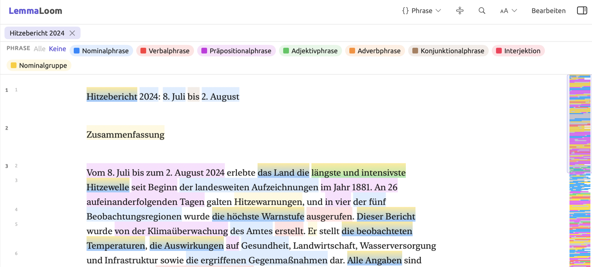
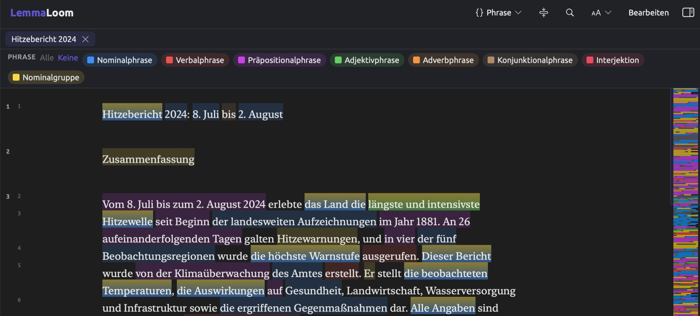
In der Legende hat jede Art von Phrase ein Aspekt-Lenslet, nämlich Nominalphrase, Verbalphrase, Präpositionalphrase, Adjektivphrase, Adverbphrase, Konjunktionalphrase (as well as, rather than) und Interjektion. Wörter, deren kleinste Phrase von anderer Art ist (etwa up in pick up), werden grau hervorgehoben.
Ein weiterer Aspekt, Nominalgruppe, annotiert den Kern einer Nominalphrase als Block. Gemeint ist ein Substantiv oder Pronomen, das als Subjekt oder Objekt dient, zusammen mit den vorangehenden Wörtern derselben Nominalphrase. Im englischen Satz We wrote to the city council after the flood sind die drei Nominalgruppen zum Beispiel We, the city council und the flood. Wörter innerhalb einer Nominalgruppe tragen deshalb zwei Hervorhebungen, die ineinander übergehen (siehe Lenses kombinieren weiter oben in diesem Kapitel). Deaktivieren Sie den Aspekt Nominalgruppe in der Legende, um nur die Phrasen zu sehen, oder behalten Sie nur Nominalgruppe, um die Nominalgruppen zu sehen.
Morphologie
Morphologie färbt jedes Wort nach einem seiner grammatischen Merkmale, nämlich Tempus, Numerus, Steigerung und Verbform, im Deutschen außerdem Kasus, Modus und Genus. Die Aspekt-Lenslets nennen ein Merkmal und einen Wert dieses Merkmals, etwa Tempus: Vergangenheit oder Numerus: Plural. Mit der Lens können Sie einen Tempuswechsel verfolgen, etwa wie „Uns läuft die Zeit davon“ von der Geschichte einer heißen Nacht ins Präsens wechselt. Ein solcher Wechsel kennzeichnet oft den Übergang eines Textes von der Anekdote zur Argumentation.
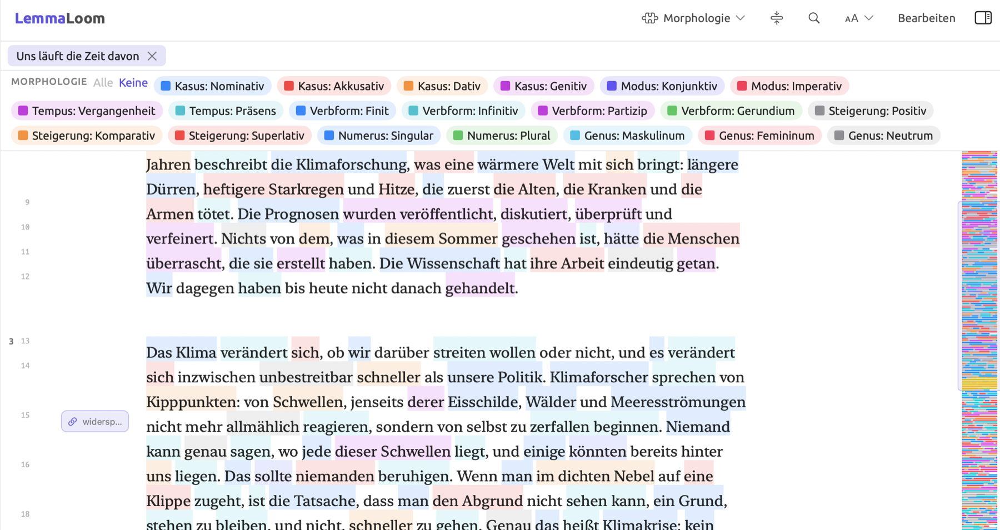
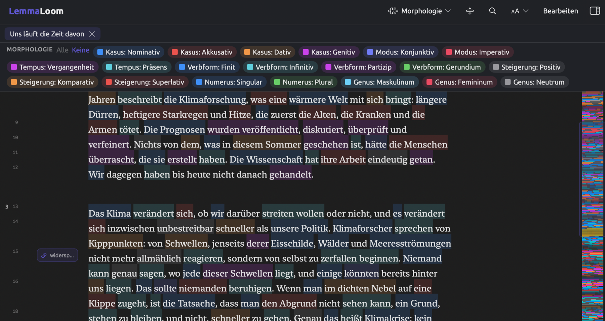
Ein Wort kann mehrere Merkmale gleichzeitig ausdrücken. Das deutsche Substantiv Aktivistinnen zum Beispiel drückt Kasus, Numerus und Genus aus. Die Lens gibt jedem Wort nur das erste verfügbare Merkmal aus dieser Liste:
| Sprache | Reihenfolge |
|---|---|
| Englisch | Tempus, Numerus, Steigerung, Verbform |
| Deutsch | Kasus, Modus, Tempus, Verbform, Steigerung, Numerus, Genus |
Im Englischen zeigen Verben meist ihr Tempus, Substantive und Pronomen ihren Numerus und Adjektive ihre Steigerungsstufe (Positiv hot, Komparativ hotter, Superlativ hottest). Partizipien Perfekt wie warmed in has warmed tragen Tempus: Vergangenheit, weil das Tempus Vorrang hat. Grundformen wie act in to act tragen Verbform: Infinitiv.
Manchmal teilen sich in LemmaLoom zwei Aspekte eine Farbe. Im Englischen haben Tempus: Präsens und Verbform: Infinitiv dasselbe Blaugrün, sodass acts und to act gleich aussehen; im Deutschen teilt Kasus: Genitiv das Violett von Tempus: Vergangenheit. Wenn Sie die beiden unterscheiden müssen, ändern Sie in den Einstellungen die Farbe eines der beiden Aspekte. Der Abschnitt Farben und Stile der Lenses weiter unten in diesem Kapitel beschreibt, wie Sie Farben und Stile der Lenses anpassen.
Im Deutschen zeigen Substantive, Artikel, Adjektive und Pronomen ihren Kasus. Steht ein Verb in Modus: Konjunktiv oder Modus: Imperativ, zeigt es seinen Modus. Alle anderen finiten Verben zeigen ihr Tempus; Infinitive und Partizipien zeigen ihre Verbform (Verbform: Infinitiv, Verbform: Partizip). Sind alle Aspekte aktiviert, erscheinen Numerus und Genus im Deutschen deshalb nur an Wörtern ohne Kasus.
Modalität
Die Lens Modalität hebt Wörter hervor, die Möglichkeit, Notwendigkeit und Willen ausdrücken. Mit ihr sehen Sie, wie viel Gewissheit ein Dokument ausdrückt. Sie können zum Beispiel vergleichen, wie oft aktivistische und skeptische Texte sagen, dass etwas geschehen muss, und wie oft, dass es geschehen könnte. Modalität arbeitet mit Wortlisten, die nach der Grundform abgeglichen werden. Jedes gelistete Wort wird nur als Verb, Hilfsverb oder Adverb annotiert (im Englischen auch als Adjektiv, für able).
| Aspekt | Englisch | Deutsch | Chinesisch |
|---|---|---|---|
| Fähigkeit | can, could, able | können | 能, 会, 可以, 能够 |
| Möglichkeit | may, might, perhaps, maybe, possibly | mögen, dürfen, vielleicht, möglicherweise, eventuell | 可能, 也许, 或许, 大概, 恐怕, 兴许 |
| Notwendigkeit | must, need | müssen | 必须, 需要, 务必, 必得 |
| Verpflichtung | should, ought, shall | sollen | 应该, 应当, 该, 理应 |
| Wille | will, would, want, wish, intend | wollen, möchten | 要, 想, 愿意, 打算, 希望 |
| Konjunktiv | jedes andere Verb im Konjunktiv, etwa hätte oder wäre |
Den Aspekt Konjunktiv gibt es nur im Deutschen. Steht ein deutsches Modalverb im Konjunktiv, etwa könnte, behält es den Aspekt seiner Grundform, hier also Fähigkeit.
Die Listen erfassen Wörter unabhängig von ihrer Bedeutung. Im Zitat In 2050 she will be thirty-five aus „Uns läuft die Zeit davon (Englisch)“ trägt will, ein bloßes Futur, den Aspekt Wille.
Verneinung
Verneinung hebt die verneinenden Wörter als Negator hervor und unterstreicht den Bereich des Satzes, auf den sie wirken, als Negationsskopus. Die Lens findet Verneinungen und die Stellen, an denen Schreibende eine Position zurückweisen, wie in „kein langsamer Niedergang, den wir in aller Ruhe verwalten könnten“ aus „Uns läuft die Zeit davon“.
Negatoren sind im Englischen Wörter wie not, n’t, never, no, nobody, nothing, none, neither, nor und nowhere sowie jedes andere Wort, das die englische Analyse als Verneinung kennzeichnet. Im Deutschen gehören nicht, kein, nie, niemals, niemand, nichts, weder und noch dazu. Das Wort noch wird allerdings unabhängig von seiner Bedeutung annotiert, also auch in wir haben noch Zeit. Zu den chinesischen Negatoren gehören unter anderem 不, 没, 没有, 别, 无 und 未.
Der Negationsskopus besteht aus dem Wort, an dem der Negator hängt, und allem, was grammatisch davon abhängt. Bestimmt der Negator das Hauptverb näher, wie es nicht meist tut, wird fast der ganze Teilsatz zum Skopus. Ein Beispiel ist wir geben nicht auf in „Uns läuft die Zeit davon“. Hier wird nicht als Negator hervorgehoben, und alle anderen Wörter, auch wir und auf, werden als Skopus unterstrichen. In Kein Minister wollte die CO2-Steuer hängt Kein an Minister, deshalb wird nur Minister unterstrichen.
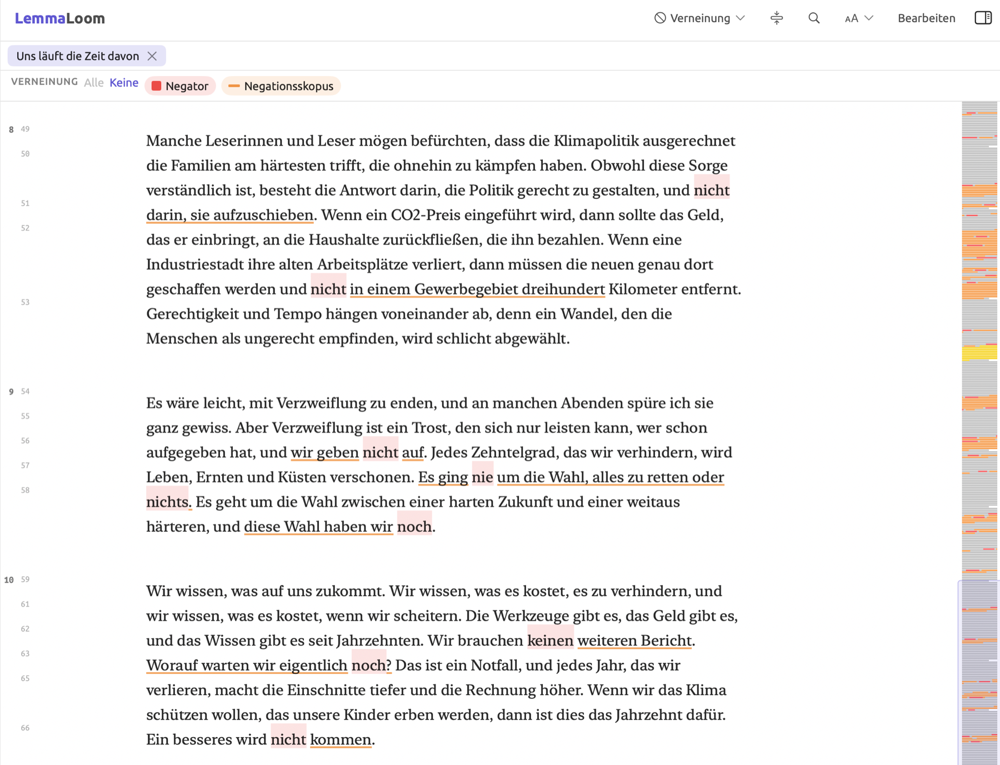
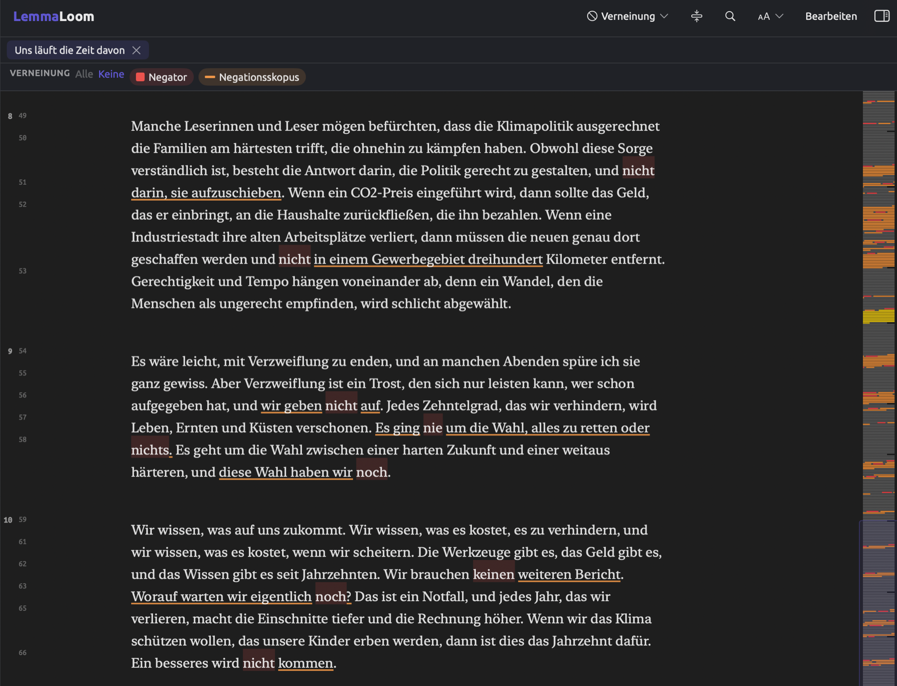
Konnektoren
Konnektoren ordnet verbindende Wörter nach ihrer Bedeutung, etwa Kausalität (weil) oder Gegensatz (aber). Mit der Lens zeichnen Sie die Logik Ihrer Dokumente nach und sehen zum Beispiel, wo Gründe genannt und wo Zugeständnisse gemacht werden. Konnektoren arbeitet mit Wortlisten und annotiert verbindende Wörter nur dort, wo sie als Konjunktion oder Adverb dienen.
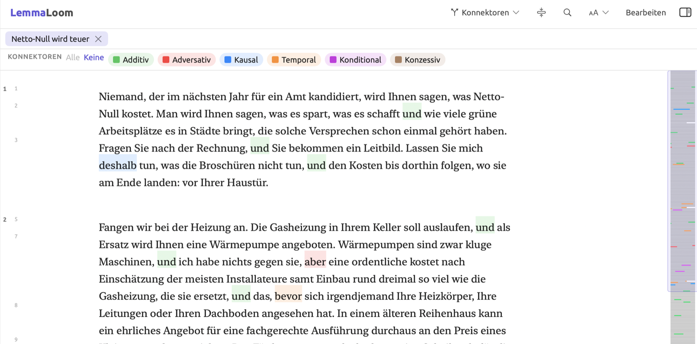
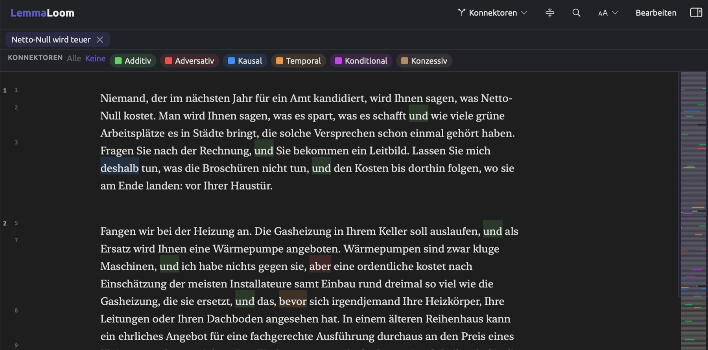
| Aspekt | Englisch | Deutsch | Chinesisch |
|---|---|---|---|
| Additiv | and, also, moreover, furthermore, besides, likewise, similarly | und, auch, außerdem, zudem, ferner | 而且, 并且, 此外, 另外, 以及 |
| Adversativ | but, however, yet, nevertheless, instead, whereas, rather | aber, jedoch, allerdings, hingegen, sondern | 但是, 但, 然而, 不过, 可是, 却 |
| Kausal | because, therefore, thus, hence, consequently, since, so | weil, denn, daher, deshalb, folglich, da, also | 因为, 由于, 所以, 因此, 于是 |
| Temporal | then, meanwhile, afterwards, before, after, finally, next, when, while | dann, danach, bevor, nachdem, schließlich, während, als | 然后, 接着, 随后, 之后, 最后, 首先 |
| Konditional | if, unless, otherwise, provided | wenn, falls, sofern, sonst | 如果, 要是, 假如, 只要, 除非, 否则 |
| Konzessiv | although, though, albeit | obwohl, obgleich, dennoch, trotzdem | 虽然, 尽管, 即使, 哪怕 |
Die Tabelle zeigt nur eine Auswahl; bei den meisten Aspekten ist die Liste etwas länger. In Reden und Debatten annotiert Additiv fast jedes und; deaktivieren Sie den Aspekt deshalb, wenn er die anderen Aspekte überdeckt.
Der Aspekt Temporal gilt für before in before the money runs out, weil es dort zwei Teilsätze verbindet, nicht aber in before an election, wo es als Präposition dient. Unter den Konjunktionen und Adverbien behält jedes gelistete Wort seinen Aspekt, gleich wie es gebraucht wird. Im Englischen gilt so in so hot als Kausal, obwohl von keinem Grund die Rede ist, und since bleibt auch in since the flood reached her street Kausal; while ist auch dann Temporal, wenn es whereas bedeutet. Im Deutschen wird außerdem da (im Sinne von dort, in gesprochener Sprache häufig) unabhängig von seiner Bedeutung als Kausal annotiert.
Die Lens Metadiskurs hat einen eigenen Aspekt Konnektiv. Er annotiert unabhängig von der ausgedrückten Beziehung nur die verbindenden Adverbien, mit denen jemand die Zuhörenden lenkt, etwa jedoch und deshalb (siehe Metadiskurs weiter unten in diesem Kapitel).
Satzfelder (Deutsch)
Satzfelder zeigt die Wortstellung eines deutschen Satzes nach dem topologischen Feldermodell der deutschen Grammatik. Das finite Verb, also die Verbform, die in Person und Numerus mit dem Subjekt übereinstimmt, bildet die linke Satzklammer (Linke Klammer). Partizipien, Infinitive und abtrennbare Verbzusätze stehen meist am Ende des Teilsatzes in der rechten Satzklammer (Rechte Klammer). Was vor der linken Klammer steht, bildet das Vorfeld, was zwischen den beiden Klammern steht, das Mittelfeld, und was auf die rechte Klammer folgt, gehört zum Nachfeld. Die Lens ist nützlich für Studien, die untersuchen, womit deutsche Autorinnen und Autoren ihre Sätze beginnen, denn das Vorfeld enthält meist das Thema oder Informationen, die die Schreibenden betonen.
Hier ein Beispielsatz, in dem alle fünf Felder besetzt sind:
Meine Nachbarin hat gestern bis drei Uhr draußen gesessen, weil ihre Wohnung unerträglich heiß war.
| Feld | Wörter |
|---|---|
| Vorfeld | Meine Nachbarin |
| Linke Klammer | hat |
| Mittelfeld | gestern bis drei Uhr draußen |
| Rechte Klammer | gesessen |
| Nachfeld | weil ihre Wohnung unerträglich heiß war |
Hat ein Satz keine rechte Klammer, wie Wir streiken heute vor dem Rathaus, umfasst das Mittelfeld alles nach dem finiten Verb. Abtrennbare Verbzusätze wie an in Der Streik fängt um acht an bilden die rechte Klammer.
Die Lens behandelt jeden Satz als einen einzigen Teilsatz und nimmt das erste finite Verb als linke Klammer. Beginnt ein Satz mit einem Nebensatz, wie Weil es so heiß war, bin ich nach Hause gegangen, werden die Felder deshalb falsch bestimmt. Das erste finite Verb ist hier war, also wird war zur linken Klammer, und das finite Verb des Hauptsatzes, bin, landet im Mittelfeld. Die rechte Klammer bestimmt die Lens nach demselben Verfahren; das letzte Partizip, der letzte Infinitiv oder der letzte abtrennbare Verbzusatz bildet die rechte Klammer. In Wir haben versucht, die Abgeordneten zu überzeugen ist die rechte Klammer deshalb überzeugen, versucht gehört zum Mittelfeld, und der Satz hat kein Nachfeld. Sätze ohne finites Verb lässt LemmaLoom ungefärbt, ebenso Satzzeichen.
Die Abbildung unten zeigt den Anfang von „Uns läuft die Zeit davon“ aus dem Projekt „Klimadebatte“. Der erste Satz beginnt mit Um Mitternacht, am heißesten Tag dieses Sommers, zeigte; Um Mitternacht, am heißesten Tag dieses Sommers ist also das Vorfeld und zeigte die linke Klammer. Der Satz hat keine rechte Klammer, deshalb gehört alles nach zeigte zum Mittelfeld.
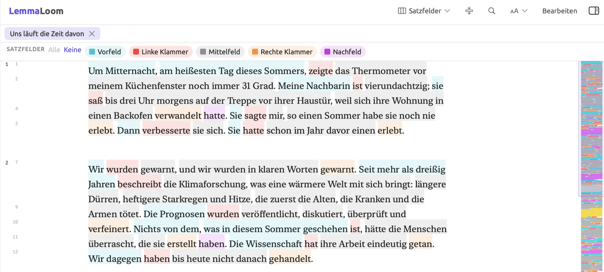
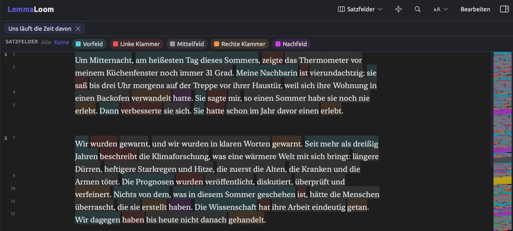
Konstruktionen und Partikeln (Chinesisch)
Zwei Lenses gibt es nur für chinesische Dokumente. Sie helfen Ihnen, Ihre Texte besser zu verstehen, wenn Ihre Studie untersucht, wie Ereignisse dargestellt werden, etwa wie Handelnde in 把-Sätzen auf ein Objekt einwirken oder wie in 被-Sätzen jemandem etwas widerfährt.
Konstruktionen hebt die typischen Schlüsselwörter von vier Satzkonstruktionen hervor:
| Aspekt | Was er annotiert | Beispiel |
|---|---|---|
| 把-Konstruktion | 把, das das Objekt vor das Verb holt | 他们把太阳能板装在屋顶上。 |
| 被-Passiv | 被 und die anderen Passivmarker, die die Analyse erkennt | 铁轨被高温晒弯了。 |
| 是…的-Fokus | 是 und das satzfinale 的, wenn sie einen Satz einrahmen | 我是去年开始参加罢课的。 |
| Existenz-有 | 有 (und 没有) als Verb | 广场上有两百个学生。 |
Die Analyse kennzeichnet possessives 有, wie in 我有时间, genauso wie existenzielles 有; Konstruktionen annotiert es deshalb ebenfalls.
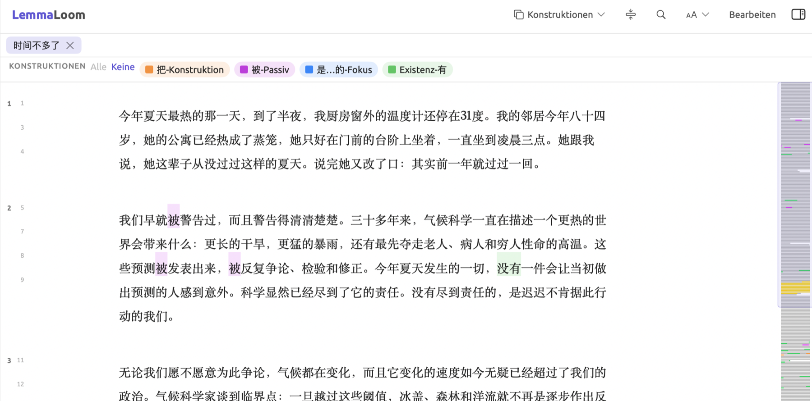
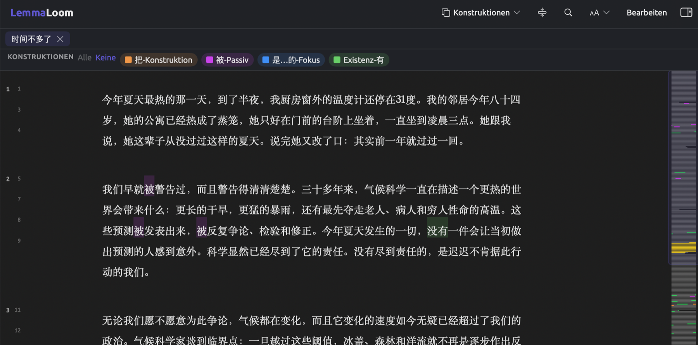
Partikeln hebt grammatische Partikeln und Zähleinheitswörter hervor:
| Aspekt | Was er annotiert | Beispiel |
|---|---|---|
| 了 perfektiv | 了 als Perfektivpartikel nach einem Verb | 我们签了请愿书 |
| 着 durativ | 着 nach einem Verb | 她举着牌子 |
| 过 experientiell | 过 nach einem Verb | 我去过那个农场 |
| 的 attributiv | 的, das ein Attribut mit einem Substantiv verbindet | 我的女儿; 种大麦的农民 |
| 地 adverbial | 地, das eine Bestimmung mit einem Verb verbindet | 慢慢地走 |
| 得 Komplement | 得 vor einem Komplement des Grades oder des Ergebnisses | 涨得很快 |
| Zähleinheitswort | Maß- und Zählwörter | 个 in 两百个学生 |
Satzfinales 了, das die Analyse als Modalpartikel behandelt, ist hier ausgenommen. Die Lens Metadiskurs annotiert es als Satzschlusspartikel.
Kohäsion
Kohäsion zeigt, wie jeder Satz an das anknüpft, was zuvor im Dokument gesagt wurde. Die Lens geht davon aus, dass ein Satz meist mit etwas bereits Eingeführtem beginnt (dem Thema) und mit neuer Information endet. Der Textlinguistik zufolge sind Texte leichter zu verstehen, wenn jedes Thema an einen vorangehenden Satz anknüpft.
Die Lens bestimmt das Thema jedes Satzes und hebt es nach seiner Beziehung zu den vorangehenden Sätzen hervor. Im Englischen ist das Thema die vollständige Subjektphrase des Hauptverbs. Im Deutschen ist es das Vorfeld oder, wenn es kein Vorfeld gibt, die vollständige Subjektphrase. Im Chinesischen ist es das Topik oder, wenn die Analyse kein Topik findet, die vollständige Subjektphrase.
| Aspekt | Wann er vergeben wird |
|---|---|
| Eröffnung | Der erste Satz des Dokuments, der an nichts anknüpfen kann |
| Pronominalbezug | Das Thema enthält ein Pronomen der dritten Person wie er, sie oder es |
| Possessive Verknüpfung | Das Thema enthält ein Possessivum der dritten Person wie sein, seine oder ihre. Ihr zählt als Pronominalbezug, weil der Test auf Pronomen zuerst kommt; im Englischen gilt dasselbe für her. |
| Demonstrativer Bezug | Das Thema enthält dieser, diese, dieses, jener oder solche |
| Wiederholtes Wort | Ein Substantiv, Pronomen, Zahlwort oder Adjektiv im Thema hat dieselbe Grundform wie ein Substantiv, Pronomen, Zahlwort, Verb oder Adjektiv in einem der beiden vorangehenden Sätze |
| Nullanapher | Nur Chinesisch. Das Hauptverb hat kein Subjekt, der Satz führt also das Topik des vorigen Satzes fort (eine Anapher ist ein Rückverweis auf etwas bereits Genanntes). Das Lenslet erscheint in der Legende jedes Dokuments. |
| Neues Thema | Keiner der obigen Fälle. Das Thema bringt etwas Neues ein, oder der Satz hat gar kein Thema. |
Die Tests laufen in der Reihenfolge der Tabelle, und der erste Test, der zutrifft, bestimmt den Aspekt. Pronominalbezug und Wiederholtes Wort sind beide grün, werden aber im Abschnitt Kohäsion der Facette Diskurs unterschieden.
Sätze ohne Subjekt (Aufforderungen, Satzfragmente wie Netto-Null bis 2050.) haben kein Thema und zählen deshalb als Neues Thema (im Chinesischen meist als Nullanapher); nur ihr Ende wird unterstrichen.
Schließlich wird in jedem Satz Neues am Ende (Betonung) unterstrichen. Gemeint ist die kleinste Phrase, die das letzte Wort des Satzes enthält, sofern sie nicht länger als sechs Wörter ist; sonst nur das letzte Wort.
Ein Beispiel:
- Unser Dorf hatte vier Busse am Tag. (Eröffnung)
- Sie fuhren in die Kreisstadt und zurück. (Pronominalbezug)
- Ihre Fahrpläne wurden in zwei Jahren zweimal ausgedünnt. (Possessive Verknüpfung)
- Die Kreisstadt bezahlt jetzt einen elektrischen Kleinbus. (Wiederholtes Wort, denn Kreisstadt steht schon in Satz 2)
- Die Spritpreise steigen weiter. (Neues Thema)
Eine Folge von Sätzen mit Neues Thema kann auf Sprünge hinweisen, die das Publikum ohne Hilfe nachvollziehen muss; die Lens misst Verknüpfungen allerdings nur grob. Pronomen erkennt sie allein an ihrer Form. Als Wiederholung zählt nur dasselbe Wort; verwandte Begriffe wie Dorf und Kreisstadt gelten nach diesem Maßstab als neue Wörter. Auch Pronomen zählen als Wiederholungen. Beginnen aufeinanderfolgende Sätze immer wieder mit dem Pronomen wir, wie im „Brief vom Klimastreik“, erscheinen deshalb viele Themen als Wiederholtes Wort.
Die Abbildung unten zeigt den Nachrichtenartikel „Streit um die CO2-Steuer“, der die Sichtweisen einer Gruppe nach der anderen darstellt. In Sätzen, die eine neue Gruppe einführen, etwa mit „Auch Abgeordnete aus ländlichen Wahlkreisen beider Seiten“, „Einige“ und „Andere“, ist das Thema nach diesem Kriterium als Neues Thema hervorgehoben. Weil das Zitat einer Hinterbänklerin selbst ein Pronomen enthält (Sie), erkennt die Lens dort einen Pronominalbezug.
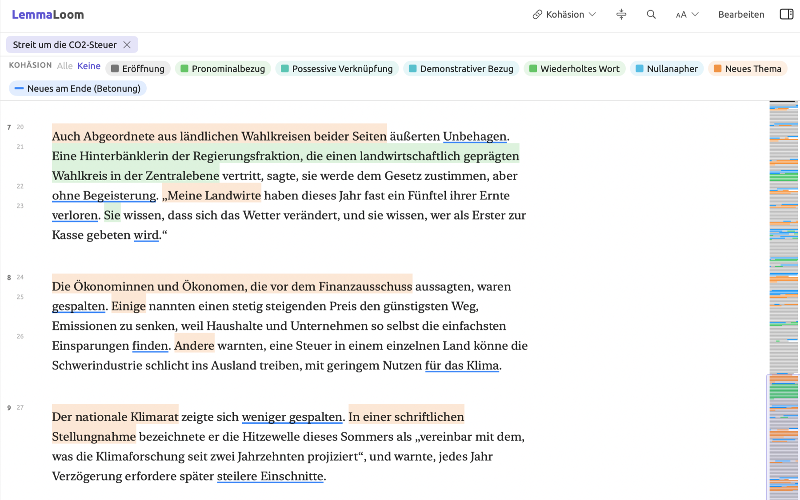
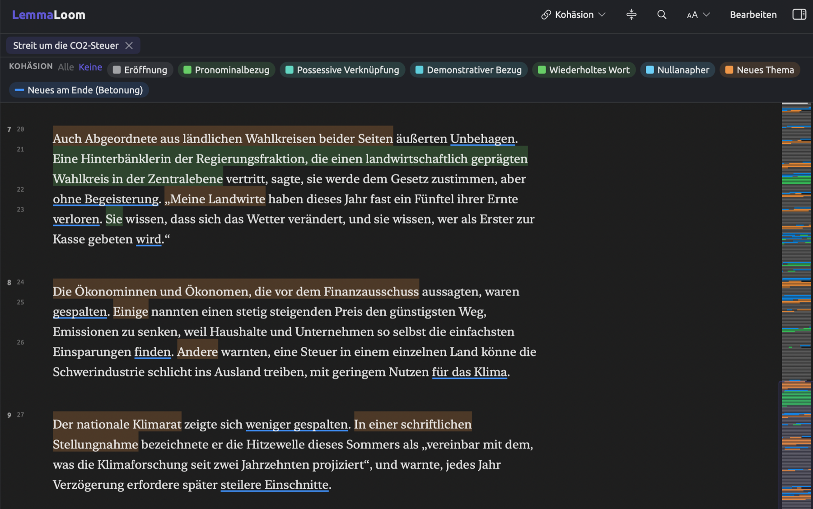
Im Abschnitt Kohäsion der Facette Diskurs im Tab Grammatik des Inspektors finden Sie eine Liste aller Verknüpfungen in jedem Satz Ihres Dokuments (auch in Sätzen ohne Thema; siehe Kohäsion in Kapitel 11, Der Grammatik-Inspektor).
Metadiskurs
Mit vielen Wörtern kommentieren Sprechende das eigene Sprechen oder wenden sich direkt an ihr Publikum, etwa mit vielleicht, offensichtlich und Sie. Die Lens Metadiskurs hebt solche Wörter hervor; so können Sie die Haltung eines Textes daran untersuchen, wie er Aussagen abschwächt oder verstärkt und sein Publikum anspricht. Die Lens arbeitet mit Wortlisten und bestimmt die Wortklasse jedes analysierten Wortes.
| Aspekt | Was er annotiert | Englische Beispiele |
|---|---|---|
| Abschwächer | Schwächt eine Behauptung ab | perhaps, probably, roughly, may, might, could, seem, suggest, often, usually |
| Verstärker | Lässt keinen Zweifel zu | clearly, obviously, certainly, indeed, always, never, demonstrate |
| Einstellungsmarker | Drückt aus, wie die sprechende Person zum Gesagten steht | fortunately, unfortunately, surprisingly, sadly, hopefully |
| Konnektiv | Lenkt von einem Gedanken zum nächsten | however, therefore, thus, nevertheless, meanwhile, instead; also, so, then und finally am Satzanfang |
| Einbeziehung | Spricht die Zuhörenden an oder schließt sie ein | you, your, we, us, our, let; Imperative wie consider, imagine und note |
| Modalpartikel | Nur Deutsch. Partikeln, die einen Satz auf die Zuhörenden hin abtönen. | ja, doch, eben, halt, mal, schon |
| Satzschlusspartikel | Nur Chinesisch. Partikeln am Satzende. | 吗, 呢, 吧, 啊 |
Deutsch und Chinesisch haben eigene Listen. Im Deutschen zählt Sie als höfliche Anrede außerhalb des Satzanfangs zur Einbeziehung.
In öffentlichen Reden und offenen Briefen, in denen die Pronomen wir und Sie häufig vorkommen, gibt es so viele Annotationen für Einbeziehung, dass sie die Darstellung überladen. Bei Bedarf deaktivieren Sie Einbeziehung in der Legende, um die anderen Aspekte deutlich zu sehen.
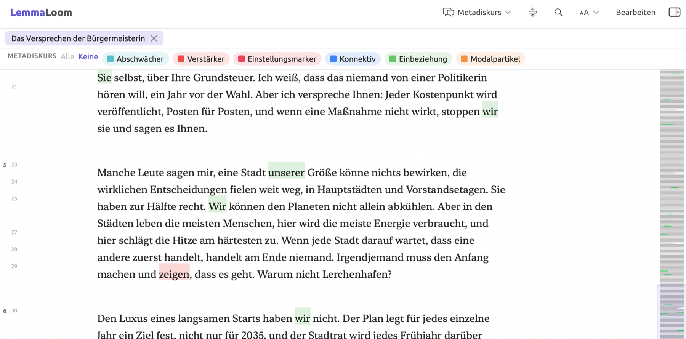
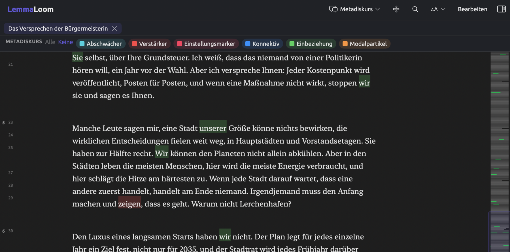
Rhetorik
Rhetorik macht auf Stilmittel aufmerksam, die Schreibende bewusst einsetzen, etwa das Passiv oder den Parallelismus. Am ergiebigsten ist Rhetorik bei ausgearbeiteten Texten wie den Meinungsbeiträgen und der Rede „Das Versprechen der Bürgermeisterin“; dort können Sie untersuchen, wie die persuasiven Texte beider Seiten aufgebaut sind. Die meisten Stilmittel werden hervorgehoben, Nominalisierung, Betonungswort und Anapher dagegen unterstrichen. Passiv und Korrelativpaar erhalten beide eine violette Hervorhebung.
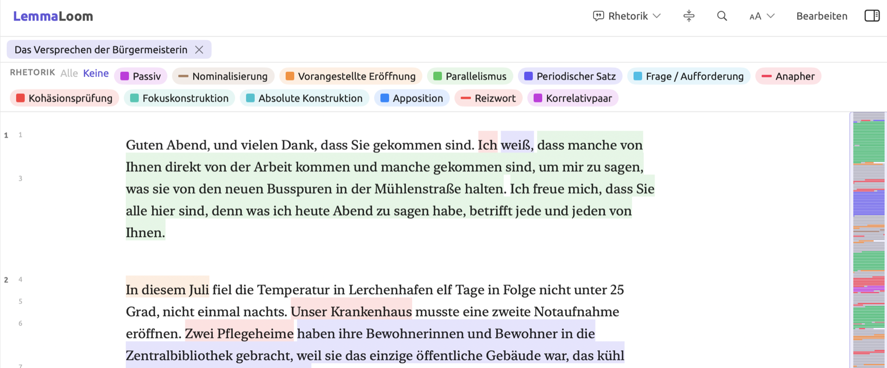
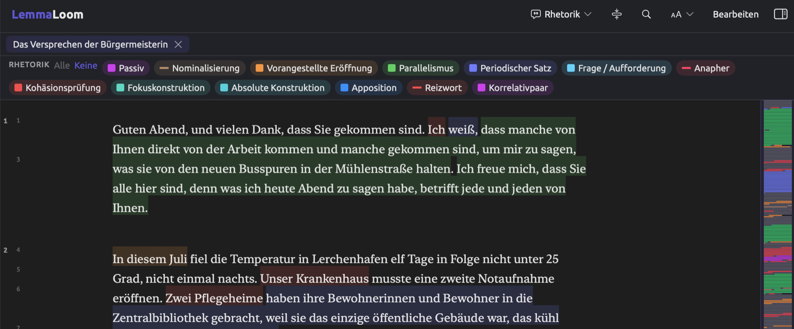
Die Tabelle nennt die Stilmittel in der Reihenfolge, in der sie geprüft werden:
| Aspekt | Was er annotiert |
|---|---|
| Passiv | Eine passive Verbgruppe, wie in the schools were closed |
| Nominalisierung | Ein Substantiv, das aus einem Verb oder Adjektiv gebildet ist. Im Englischen ein Substantiv mit sieben oder mehr Buchstaben auf -tion, -sion, -ment, -ness, -ity, -ance, -ence oder -ism (decision, payment); im Deutschen Endungen wie -ung, -heit und -keit |
| Vorangestellte Eröffnung | Wörter, die am Satzanfang vor dem Subjekt stehen, etwa eine adverbiale Bestimmung oder eine Partizipialgruppe (After the flood, the council…) |
| Parallelismus | Drei oder mehr koordinierte Glieder oder zwei koordinierte Teilsätze mit jeweils eigenem Subjekt (we marched and they watched) |
| Periodischer Satz | Ein Satz mit mindestens zwölf Wörtern, von denen mindestens 55 Prozent vor seinem Hauptverb stehen (bei einem Satz mit 20 Wörtern mindestens 11). Im Deutschen ein Satz, dessen Mittelfeld acht oder mehr Wörter enthält, bevor die rechte Klammer es schließt |
| Frage / Aufforderung | Ein ganzer Frage- oder Aufforderungssatz |
| Fokuskonstruktion | Sätze, die so umgebaut sind, dass ein Element im Mittelpunkt steht, etwa there is…, what we need is… und it was the farmers who… |
| Absolute Konstruktion | Ein Substantiv mit einem Partizip, das vom übrigen Satz abgesetzt steht (the vote taken, we went home) |
| Apposition | Eine Nominalphrase, die die benachbarte noch einmal benennt |
| Betonungswort | Ein Superlativ, ein verstärktes Adjektiv oder Adverb (extremely hot) oder ein betonendes Adverb wie only, never oder even |
| Korrelativpaar | Paarige Konjunktionen wie both … and, either … or und neither … nor |
| Kohäsionsprüfung | Das Thema eines Satzes mit sechs oder mehr Wörtern, den die Lens Kohäsion als Neues Thema einstuft |
| Anapher | Die ersten beiden Wörter aufeinanderfolgender Sätze, die mit demselben Wort beginnen, sofern es nicht the, a, an, and, but, so oder then ist. Gemeint ist die rhetorische Figur; mit Nullanapher in Kohäsion hat sie nichts zu tun. |
Jede Wortannotation zeigt ein einziges Stilmittel aus der Tabelle, nämlich das erste in der Reihenfolge der Tabelle, dessen Test auf das Wort zutrifft. Weil Frage / Aufforderung den ganzen Satz erfasst und Periodischer Satz alles vor dem Hauptverb, haben diese beiden Vorrang vor den Stilmitteln weiter unten in der Tabelle. Pronomen der ersten Person wie ich und wir gelten dabei als Anfangswörter; Anapher annotiert deshalb in „Warum wir Straßen blockieren“ viele Satzanfänge.
Für Deutsch und Chinesisch gibt es eigene Fassungen der meisten Tests. So annotiert Vorangestellte Eröffnung im Deutschen ein Vorfeld, das nicht das Subjekt enthält, im Chinesischen dagegen ein vorangestelltes Topik. Absolute Konstruktion wird nur in englischen Dokumenten erkannt, Periodischer Satz in englischen und deutschen. Die Lenslets aller Stilmittel, auch dieser beiden, erscheinen in der Legende jedes Dokuments.
Der Abschnitt Rhetorik der Facette Diskurs im Tab Grammatik des Inspektors listet alle erkannten Stilmittel mit einer kurzen Erklärung auf, warum sie annotiert wurden. Die Liste enthält auch Befunde, die im Text verborgen sind, nämlich solche mit einem deaktivierten Aspekt und solche, deren Wörter ein früheres Stilmittel zeigen (siehe Rhetorik in Kapitel 11, Der Grammatik-Inspektor).
Codes und Lesezeichen
Codes stellt alle kodierten Textstellen im Dokument im Format und in der Farbe des jeweiligen Codes dar (Sie wählen Hervorheben, Unterstreichen oder Umrahmt unter Format, wenn Sie einen Code anlegen oder bearbeiten; siehe Die Felder eines Codes in Kapitel 7, Kodieren). Außerdem zeichnet die Lens neben jede Kodierung einen farbigen Balken in die Randspalte links vom Text. Wenn Sie Codes deaktivieren, sind beide nicht mehr zu sehen. Lassen Sie Codes beim Kodieren aktiviert. Wenn Sie mit dem Kodieren fertig sind und Ihren Text ohne all Ihre Kodierungen lesen möchten, deaktivieren Sie Codes.
Lesezeichen hebt jede Textstelle mit einem Lesezeichen in dessen Farbe hervor und zeichnet das Lesezeichen in die Randspalte und in die Dokumentübersicht.
Memos und Verknüpfungen sind zu sehen, unabhängig davon, welche Lenses aktiviert sind, ebenso wie Kodierungen, solange Codes aktiviert ist.
Wörterbuch-Lenses
Wörterbücher erscheinen unter ihrem eigenen Namen in der Gruppe der Annotationen im Lens-Menü. Eine Wörterbuch-Lens hebt die Begriffe jeder Kategorie in der Farbe hervor, die für die Kategorie festgelegt ist, und ihre Legende hat ein Aspekt-Lenslet pro Kategorie. Das Projekt „Klimadebatte“ enthält ein Wörterbuch, „Heckenausdrücke“, mit den beiden Kategorien Approximatoren und Abschwächer. Ist „Heckenausdrücke“ aktiviert, zeigt die Legende diese beiden Lenslets. In Mir scheint, die Last trifft so gut wie alle aus der „Radiodebatte“ wird scheint als Abschwächer hervorgehoben und so gut wie als Approximator. Eine Wörterbuch-Lens eignet sich, wenn Ihre Studie bestimmte Wörter nach eigenen Kategorien einteilt, etwa Heckenausdrücke, Schuldzuweisungen oder Begriffe eines bestimmten Politikfelds.
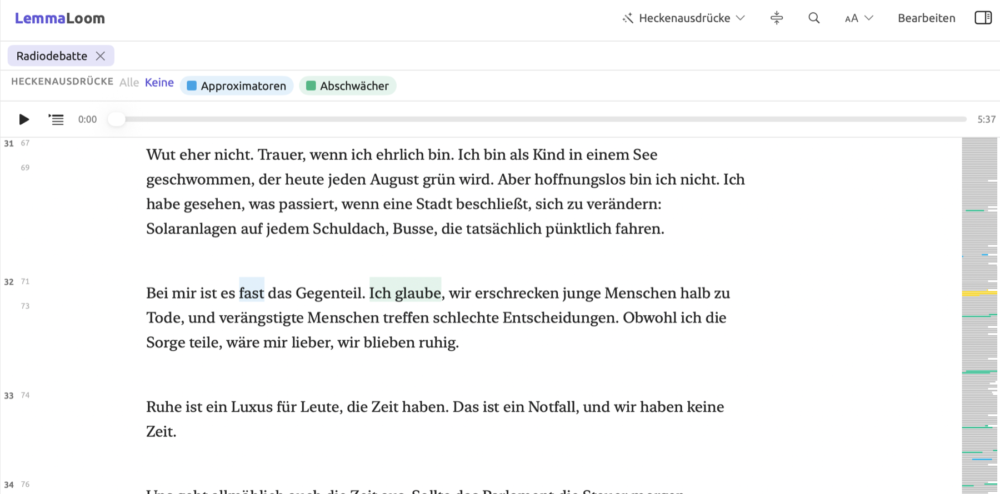
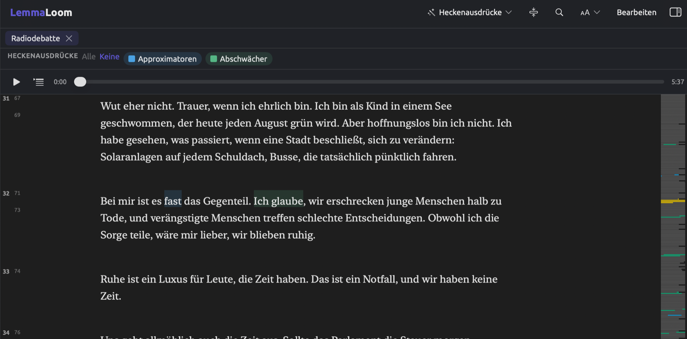
Begriffe werden als ganze Wörter gefunden, ohne Rücksicht auf Groß- und Kleinschreibung oder Akzente; chinesische Begriffe werden dagegen überall gefunden, wo sie vorkommen (siehe Wie Begriffe gefunden werden in Kapitel 19, Wörterbücher). Jede Wortform muss als eigener Begriff eingetragen werden. Wenn zum Beispiel Modell und Modelle gefunden werden sollen, nehmen Sie beide als Begriffe auf. Der Abgleich berücksichtigt keine Grammatik. In einem Satz wie Ist das etwa gerecht? wird etwa als Approximator hervorgehoben, obwohl es dort eine Modalpartikel ist. Die Legende erscheint sofort, wenn Sie die Lens aktivieren, die Hervorhebungen dagegen erst, wenn die Begriffe abgeglichen sind. Bearbeiten Sie das Wörterbuch, während die Lens aktiviert ist, werden die Annotationen entsprechend aktualisiert.
Anders als die feste Liste, die der Aspekt Abschwächer der Lens Metadiskurs verwendet, enthalten Wörterbücher Begriffe und Kategorien, die Sie selbst festlegen. Regeln wie eine Wortart können Sie dagegen mit einer Abfrage-Lens hinzufügen.
Abfrage-Lenses
Aus jeder Abfrage, die Textstellen findet, können Sie eine Abfrage-Lens sichern. Öffnen Sie das Menü Sichern (das Kästchen mit dem Pfeil nach unten im Kopf der Abfrage) und klicken Sie auf Als Lens sichern … (siehe Eine Abfrage als Lens sichern in Kapitel 18, Abfrageergebnisse nutzen). Das Projekt „Klimadebatte“ enthält eine gesicherte Abfrage-Lens namens „Dringlichkeit im Gespräch“, die Sätze mit den Wörtern dringend, Dringlichkeit, Krise, Notfall oder Frist hervorhebt, wenn sie sich mit Textstellen überschneiden, die mit dem Code „Dringlichkeit“ kodiert sind. Eine Abfrage-Lens eignet sich für Fragen, die mehrere Regeln verbinden, etwa Wörter mit ihren grammatischen Merkmalen oder Kodierungen mit Wörtern. In welchen Dokumenten eine Abfrage-Lens zur Verfügung steht, hängt davon ab, was Sie beim Sichern der Abfrage unter Verfügbar in gewählt haben:
- eine Abfrage, die für Alle Projekte oder für das Projekt gesichert ist, erscheint in jedem Dokument des Projekts;
- eine Abfrage, die für ein Set gesichert ist, erscheint in den Dokumenten dieses Sets und in deren Übersetzungen;
- eine Abfrage, die für ein Dokument gesichert ist, erscheint nur in diesem Dokument.
„Dringlichkeit im Gespräch“ ist für das Projekt gesichert und steht deshalb in jedem Dokument des Projekts „Klimadebatte“ zur Verfügung.
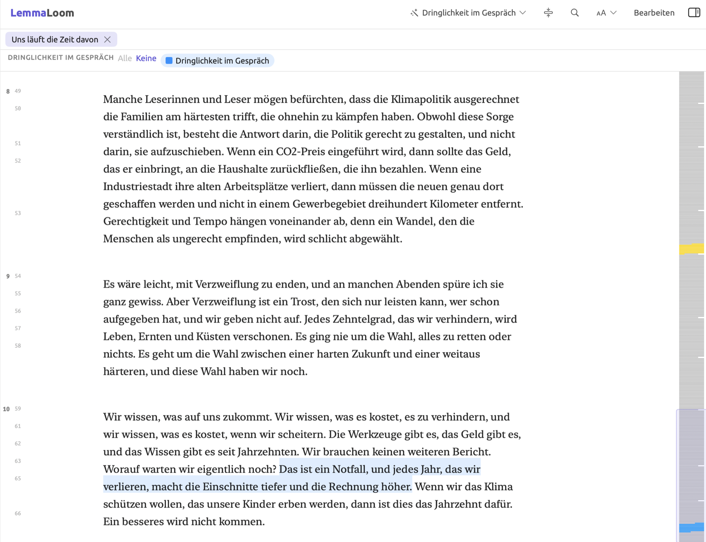
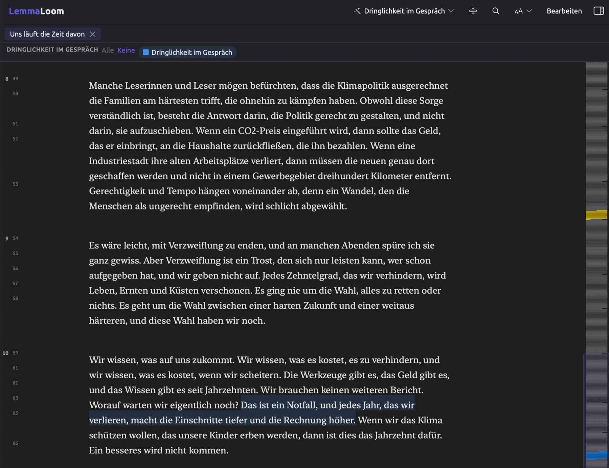
Eine Abfrage-Lens annotiert die Treffer der Abfrage, aus der sie stammt. Hat die Abfrage keine Kategorien, zeigt die Legende ein einziges Lenslet mit dem Namen der Abfrage, und alle Treffer werden hervorgehoben. Hat sie Kategorien, ist jede Kategorie ein Aspekt mit eigener Farbe und eigenem Stil (Hervorheben oder Unterstreichen, wie in der Bedingung Kategorien der Abfrage eingestellt). Mit Färben nach bekommt jeder Wert, der in den Treffern vorkommt, einen eigenen Aspekt, insgesamt bis zu sechzehn. Die ersten acht Werte werden hervorgehoben, die nächsten acht in denselben acht Farben unterstrichen (siehe Kategorien und Färben nach in Kapitel 15, Eine Abfrage erstellen). Die Lenslets in der Legende einer Abfrage-Lens zeigen immer Quadrate.
Wenn sich Kodierungen oder Lesezeichen im Dokument ändern, werden die Abfrage-Lenses erneut ausgeführt; eine Abfrage, die nach kodierten Textstellen sucht, bleibt so beim Kodieren aktuell. Um eine Abfrage-Lens aus dem Lens-Menü zu entfernen, öffnen Sie das Menü Sichern der Abfrage und klicken auf Lens entfernen. Welche Bedingungen eine Abfrage erfüllen muss, damit sie zur Lens werden kann, steht unter Welche Abfragen Lenses werden können in Kapitel 18, Abfrageergebnisse nutzen.
Analysator-Lenses
Analysatoren, die Sie unter Fenster ▸ Analysatoren festlegen, finden Textabschnitte und weisen ihnen Schlüssel zu. Die Schlüssel in der Legende des Analysators bilden die Aspekte seiner Lens. Alle Ihre Analysatoren stehen unter ihrem jeweiligen Namen in der zweiten Gruppe des Lens-Menüs, und zwar nur in Dokumenten, deren Sprache der jeweilige Analysator verarbeiten kann. In der Lens erscheinen nur Textabschnitte, denen ein Schlüssel aus der Legende des Analysators zugewiesen ist, in der Farbe und im Stil (Hervorheben, Unterstreichen, Textfarbe oder Fett), die für diesen Schlüssel in der Legende festgelegt sind. Einen Analysator brauchen Sie, wenn Sie in Ihren Dokumenten immer wieder nach einem Muster suchen, das keine der vorhandenen Lenses, Wörterbücher oder Abfragen erfasst.
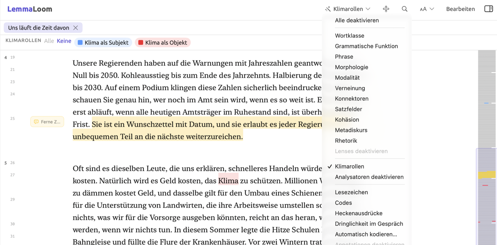
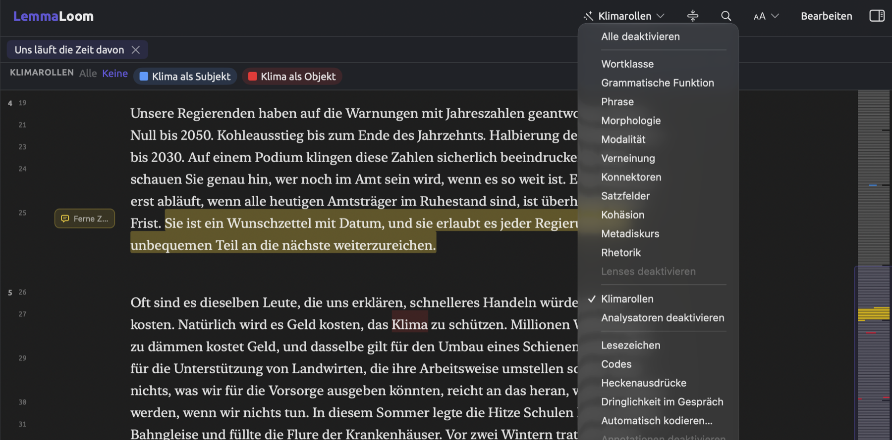
Wenn Sie einen Analysator für ein Dokument auslassen oder seine Ausgabe in den Dokumenteigenschaften entfernen, verschwindet seine Lens aus dem Lens-Menü dieses Dokuments (siehe Analysatoren für einzelne Dokumente in Kapitel 20, Eigene Analysatoren). Wie Sie Analysatoren schreiben und wann sie ausgeführt werden, erfahren Sie in Kapitel 20, Eigene Analysatoren.
Farben und Stile der Lenses
Bei vier Lenses (Wortklasse, Grammatische Funktion, Phrase und Morphologie) können Sie Farbe und Stil anpassen. Ihre Anpassungen gelten für die Lens in jedem Dokument und in jedem Projekt. Alle anderen eingebauten Lenses haben feste Farben. Wörterbuch-, Abfrage- und Analysator-Lenses übernehmen ihre Farben von den Kategorien und Schlüsseln, die zu ihnen gehören. Passen Sie die Farben an, wenn Sie zwei Aspekte schlecht unterscheiden können oder wenn Sie mehr Lenses übereinanderlegen möchten, als ihre Standardstile zulassen.
Jeder Aspekt kann in einem von vier Stilen erscheinen:
| Stil | So sieht das Wort aus |
|---|---|
| Hervorheben | Ein blasses Farbband hinter dem Wort |
| Unterstreichen | Eine farbige Linie unter dem Wort |
| Textfarbe | Die Buchstaben in der Farbe |
| Fett | Die Buchstaben fett und in der Farbe |
Die Lenses Wortklasse und Grammatische Funktion unterstreichen standardmäßig. Phrase und Morphologie heben dagegen hervor.
Die Abbildung unten zeigt den Bereich Lenses der Einstellungen mit Zeilen für jeden Aspekt von Wortklasse und Grammatische Funktion, jeweils auf Unterstreichen gestellt.
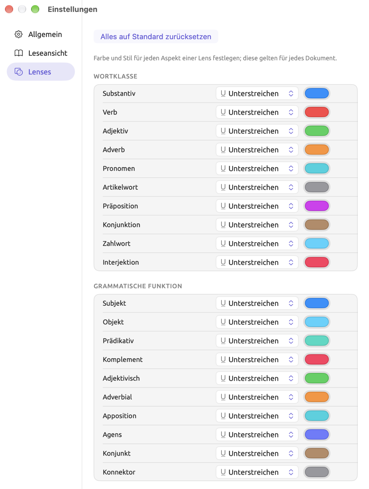
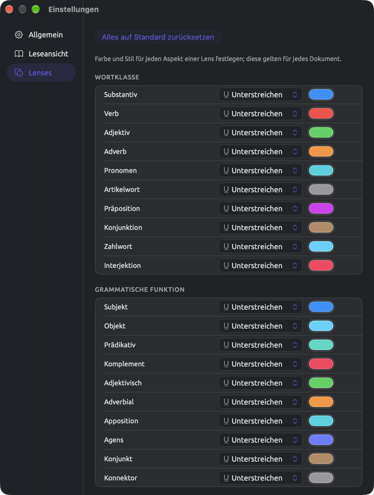
So ändern Sie die Darstellung eines Aspekts:
- Wählen Sie LemmaLoom ▸ Einstellungen … (⌘,) und klicken Sie auf Lenses.
- Suchen Sie den Abschnitt der Lens und die Zeile des Aspekts, etwa Substantiv unter Wortklasse.
- Wählen Sie im Menü dieser Zeile, das den aktuellen Stil zeigt (etwa Unterstreichen), einen Stil.
- Klicken Sie auf das Farbfeld daneben und wählen Sie eine Farbe.
Geöffnete Dokumente werden sofort aktualisiert, wenn Sie etwas ändern. In Hilfe ▸ Glossar erscheinen Tags und Begriffe, die für einen Aspekt stehen, etwa NN für Substantiv, in der Farbe und im Stil dieses Aspekts. Die Lenslets in der Legende zeigen die Standardfarben und Standardformen der Aspekte; nach einer Änderung unterscheiden sich das Lenslet und seine Wörter im Text deshalb. Jeder geänderte Aspekt bekommt eine Schaltfläche zum Zurücksetzen, die am Ende seiner Zeile als gebogener Pfeil erscheint, mit einem Tooltip wie Substantiv zurücksetzen. Ein Klick darauf setzt den Aspekt auf seine Standardwerte zurück. Ganz oben im Bereich setzt die Schaltfläche Alles auf Standard zurücksetzen alle Aspekte aller vier Lenses auf einmal zurück (siehe Der Bereich „Lenses“ in Kapitel 24, Einstellungen und Darstellung).